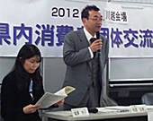

- 【日 時】
- 2月5日（火）13：30～16：00
- 【場 所】
- 東上パールビルジング 第1・第2会議室
- 【参加団体】
- 県内消費者団体：13団体（28人）
上尾市消費者団体連絡会、狭山市消費者団体連絡会、所沢消費者団体連絡会、埼玉県西部地区活動推進世話人会、新座市くらしの会、和光市消費者団体連絡会、和光市くらしの会、生活協同組合さいたまコープ、埼玉県消費生活コンサルタントの会、NPO法人埼玉消費者被害をなくす会、埼玉公団住宅自治会協議会、埼玉県生協ネットワーク協議会 資料提供参加：25団体 - 【行 政】
- 埼玉県消費生活課、埼玉県消費生活支援センター川越、新座市役所経済振興課、和光市役所市民活動推進課（5名）他、講師1名
- 【司 会】
- 滝澤 玲子 幹事（埼玉県生協ネットワーク協議会 会長）
■市町村の行政との懇談について
提案 岩岡 宏保（消団連事務局長）
今回交流会の目的に触れ、各市町村との懇談が提案されました。
■学習会

「消費者教育推進法」と「消費者教育推進協議会」
弁護士 松苗 弘幸さん
「消費者教育は単なる子ども教育ではなく、消費者主役の社会に向けての運動・行動でもあります。この法律の地方公共団体に対して、または市町村に対しての条文にある「努めなければならない」努力義務に関しては、後押しが必要です。できるだけ多くの地元市町村と懇談をすすめてください。」と話されました。
質問：国が基本方針を出さなければ、市町村に働きかけても時期尚早になってしまうのでは？
回答：早いのではなく消費者の関心を示すこと、更に「準備会」の設置を話す事も意味があります。
■グループ交流
 学習テーマと各団体の創設ふりかえり
学習テーマと各団体の創設ふりかえり
 消費生活関連事業調査から読み取るわが町の様子
消費生活関連事業調査から読み取るわが町の様子
 くらしの会と婦人会の存在があり、市によって形態に違いがありました。市の消団連は市の補助は無か限られており、くらしの問題に自発的な活動をしてきました。
くらしの会と婦人会の存在があり、市によって形態に違いがありました。市の消団連は市の補助は無か限られており、くらしの問題に自発的な活動をしてきました。
さいたまコープは組合員が消費者活動をしていますが、地域消団連等への参加の継続が求められています。消費者教育推進法の認知も進めたいです。消費生活コンサルタントの会からは、相談件数が多いことは被害防止につながる、小学校から具体的消費者教育が必要という意見が出されました。
 各自の自治体の消費者行政データ・ランキングを見ながら、評価できる・改善してほしいところを書いて発表しました。一人あたり消費者行政予算や相談体制など、数字からの感想や、職員の継続性、相談以外の事業、啓発活動の協力など、実情に即した評価改善点も挙げられました。
各自の自治体の消費者行政データ・ランキングを見ながら、評価できる・改善してほしいところを書いて発表しました。一人あたり消費者行政予算や相談体制など、数字からの感想や、職員の継続性、相談以外の事業、啓発活動の協力など、実情に即した評価改善点も挙げられました。
◆まとめ
隈本 敦子さん（埼玉公団住宅自治会協議会 常任理事）
「推進法を広げていけるよう学習を重ね、懇談をとおして教育推進地域協議会の設置を実現していけるよう、私たちで「後押し」をしていきましょう」とのまとめの挨拶で交流会を終えました。